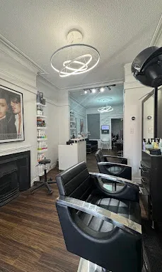

01
Cut & shape
Thoughtful shaping, tailored to your style.
- Women's haircuts Master & junior hairstylists
- Men's haircuts Master & junior hairstylists
- Bang trim
- Beard trim
A TORONTO HAIR SALON
A thoughtful approach to cut, colour and style — made to feel like you.
The right cut. The right tone. The little details that make a look feel entirely your own.
The Cutting Room is a hair salon located on Irwin Avenue in Toronto. From everyday cuts to dimensional colour and occasion styling, explore a range of services designed around your hair.
Discover what we do ↘
A SPACE TO MAKE YOURSExplore the salon's listed services. For availability, timing and pricing, please contact the salon directly.
Thoughtful shaping, tailored to your style.
From subtle dimension to a fresh colour direction.
Care-focused services for a smoother, softer finish.
Finishing touches for everyday and special moments.
It's all in the feeling.
THE CUTTING ROOM · TORONTO★★★★★“Excellent place and service, standing out among all around, very clean place.”
GOOGLE REVIEW
★★★★★“The shampoo and conditioning felt incredible, and his hands are truly magic.”
GOOGLE REVIEW
★★★☆☆“He rushed through my haircut and gave me layers before confirming with me.”
GOOGLE REVIEW
Review excerpts are reproduced as supplied in the business listing. Individual reviewer names were not provided.
A little moment for yourself, right in the heart of Toronto.
Contact the salon for current opening hours.